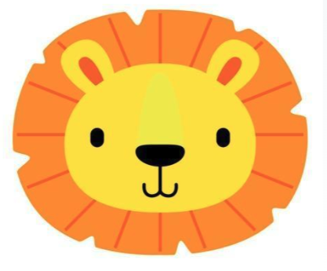
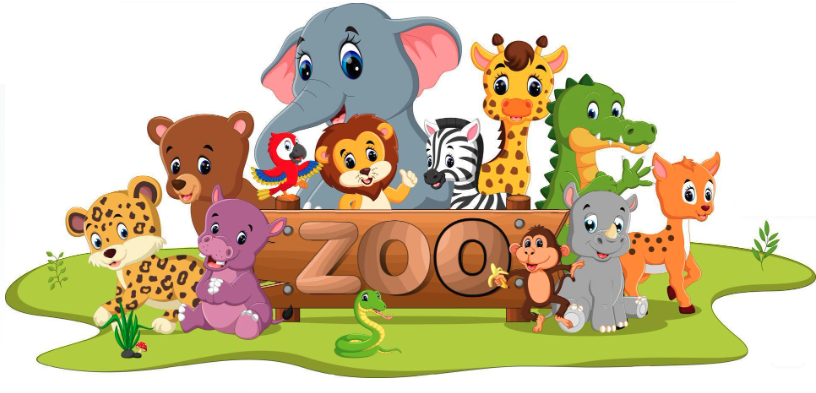

Meet our animals:
Bears
- Ollie
- Mona
Giraffes
- Frankie
- Coconut
Lions

- Mella
- Karl
Monkeys
- Cookie
- Earl
- Banana Pudding
Alligators
- Wren
- Aspen
- Mika
Pandas
- Jun
- Ken
- Pon
Bears are carnivoran mammals of the family Ursidae. Common characteristics of modern bears include large bodies with stocky legs, long snouts, small rounded ears, shaggy hair, plantigrade paws with five nonretractile claws, and short tails.
The giraffe is a large African hoofed mammal belonging to the genus Giraffa. It is the tallest living terrestrial animal and the largest ruminant on Earth.
The lion (Panthera leo) is a large cat of the genus Panthera native to Africa and India. It has a muscular, broad-chested body; short, rounded head; round ears; and a hairy tuft at the end of its tail. The lion is an apex and keystone predator.
Monkey is a common name that may refer to most mammals of the infraorder Simiiformes, also known as the simians. Many monkey species are tree-dwelling, although there are species that live primarily on the ground. Monkeys are generally considered to be intelligent, especially the Old World monkeys.
An alligator, or colloquially gator, is a large reptile in the Crocodilia order in the genus Alligator of the family Alligatoridae. The name "alligator" is likely an anglicized form of el lagarto, the Spanish term for "the lizard", which early Spanish explorers and settlers in Florida called the alligator.
The giant panda (Ailuropoda melanoleuca), sometimes called a panda bear or simply panda, is a bear species endemic to China. It is characterised by its bold black-and-white coat and rotund body. Though it belongs to the order Carnivora, the giant panda is a folivore, with bamboo shoots and leaves making up more than 99% of its diet.
Remember you can always ask our experienced zookeepers if you have questions!
- Contact zookeeper@wamz.org
- Call 1-800-288-3966 (1-800-CUTE ZOO)
